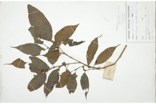
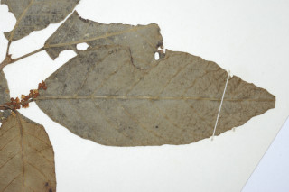
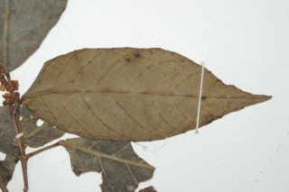

Images :




| Habit : | Trees up to 5 m tall. |
| Leaves : | Leaves simple with opposite , decussate , unequal pairs; petiole to 1.5 cm long, canaliculate ; lamina 9.5-19.5 x 2.6-7 cm, elliptic-lanceolate , long acuminate to caudate , base acute or obtuse , margin widely sinuate or dentate , resinous yellow glandular beneath; secondary_nerves 7-10 pairs; tertiary_nerves obliquely_percurrent . |
| Inflorescence / Flower : | Flowers unisexual ; inflorescence racemes , shorter than leaves . |
| Fruit and Seed : | Capsules , 3 lobed with hard conical spines , to 1.5 cm across; seeds 1 per lobe . |